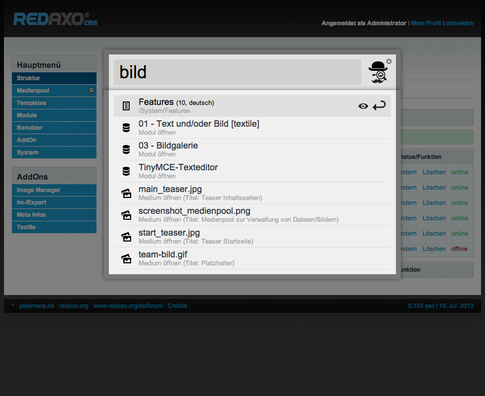
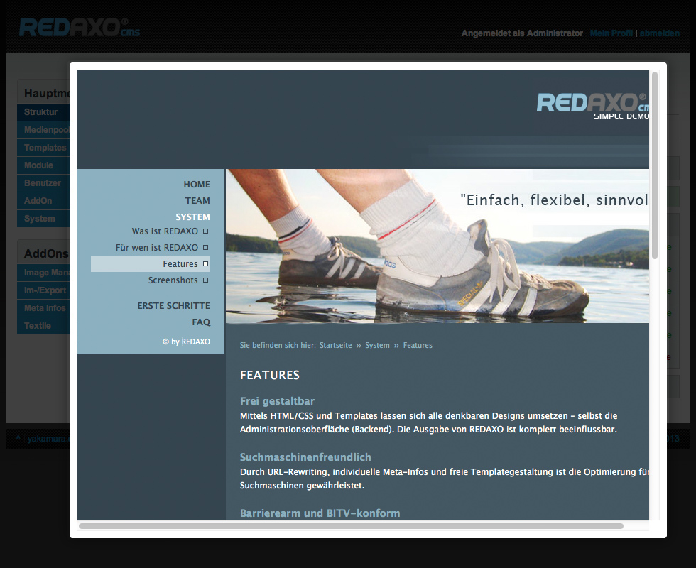
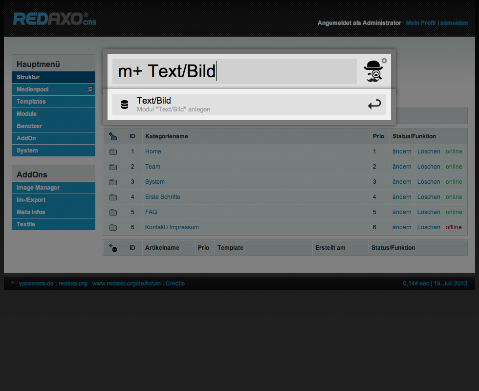
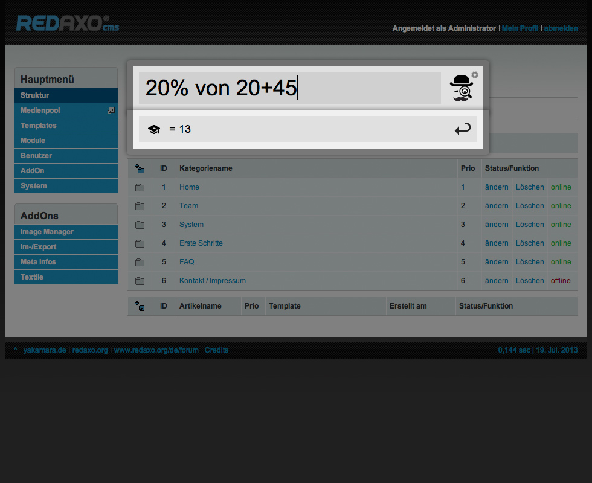

Beschreibung
Watson spart Zeit bei der Suche nach Artikeln, Modulen, Templates, Benutzer und Dateien und … im REDAXO Backend.
Voraussetzungen
Installation
- Ordner redaxo_watson in watson umbenennen
- AddOn installieren und aktivieren
- Plugins installieren und aktivieren
Bugtracker
Du hast einen Fehler gefunden oder ein nettes Feature parat? Lege ein Issue an. Bevor du ein neues Issue erstellts, suche bitte ob bereits eines mit deinem Anliegen existiert und lese die Issue Guidelines (englisch) von Nicolas Gallagher.
Changelog
siehe CHANGELOG.md
Lizenz
siehe LICENSE.md
Autor
- Thomas Blum
-
http://blumbeet.com
-
https://github.com/tbaddade
Credits
- Inspiriert von
- Alfredapp
- Gedankenaustausch
- Jan Kristinus
- Markus Staab
- Watson Logo
- Ralph Zumkeller
Benutzung
Watson
-
öffnen
- ctrl + space
(um im Firefox das Contextmenü zu vermeiden, "ctrl + alt + space" drücken)
- ctrl + alt + space
- ctrl + cmd + space
-
schließen
- ESC
- ctrl + space
- ctrl + alt + space
- ctrl + cmd + space
Quick look
-
öffnen
-
schließen
- Cursortaste links
- Cursortaste oben
- Cursortaste unten
Keywords
Sind Keywords registriert, wird die Suche entsprechend eingegrenzt.
t text- t grenzt die Suche auf Templates ein
Add-Modus
Gibt man ein Keyword und nachfolgend ein + ein, gelangt man in den Add-Modus (hinzufügen/anlegen) der angegebenen Url.
t+ Neues Template- t+ wird ein neues Template mit dem Namen Neues Template anlegen
Kommandos
Ein Kommando ist ein Keyword ohne weitere Texteingabe und löst bei enter eine Aktion aus.
logout- hierdurch wird man vom REDAXO Backend ausgeloggt
Plugins
watson_core
-
Suchen
-
Artikel
a+; c+; on; off - um eine(n) Kategorie/Arikel anzulegen, muss man sich in der Struktur befinden
-
Medien
m, m+; f, f+
-
Module
m, m+
-
Templates
t, t+
-
Benutzer
u+
-
Kommandos
-
start
zur Startseite im Backend
-
home
zur Startseite im Frontend
-
logout
REDAXO logout
watson_calculator
Ein einfacher Rechner
-
Keywords
abhängig von der Backendsprache
- =
- brutto / gross
- netto / net
- ust / vat
-
Konstanten
- Pi (Kreiszahl π), 3.141592653589793
- G (Gravitationskonstante), 6.67384E-11
Beispiele
Allgemein |
| Eingabe | Ergebnis |
| 2+4 | 6 |
| 2+4*6 | 26 |
| 2+4*6/8 | 5 |
| Pi*2 | 6,28318530718 |
| G*5.9736E+24/6.371E+6^2 | 9,82192737896 |
Prozent |
| Eingabe | Ergebnis |
| 20 von 200 | 40 |
| 20% von 200 | 40 |
Umsatzsteuer |
| Eingabe | Ergebnis |
| brutto 200 | 238 |
| brutto 100+100 | 238 |
| brutto 7 200 | 214 |
| brutto 7 100+100 | 214 |
| netto 238 | 200 |
| netto 138+100 | 200 |
| netto 7 214 | 200 |
| netto 7 114+100 | 200 |
| ust 238 | 38 |
| ust 138+100 | 38 |
| ust 7 214 | 14 |
| ust 7 114+100 | 14 |
Screenshots
Ergebnisse

Quick look

Modul anlegen

Taschenrechner

{kind=link}
{kind=link}
{kind=link}
{kind=link}